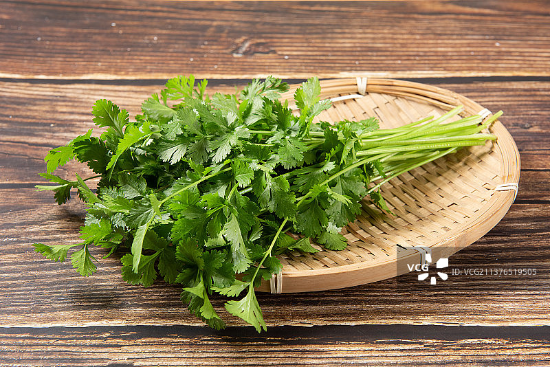
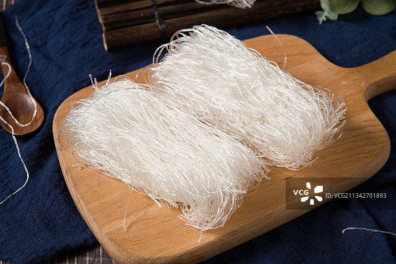
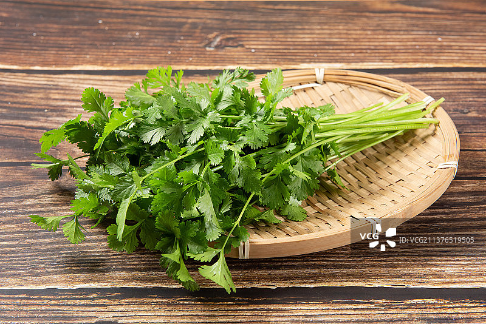
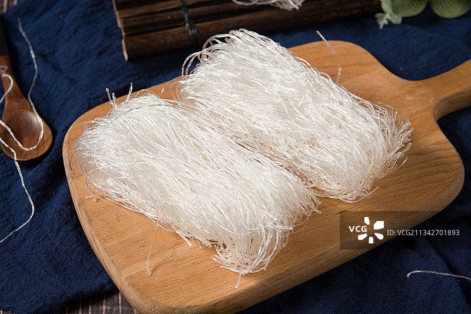
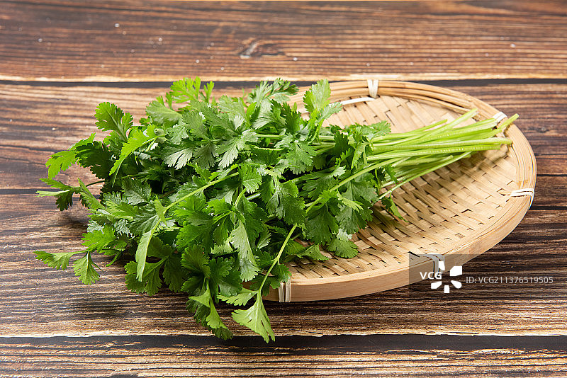
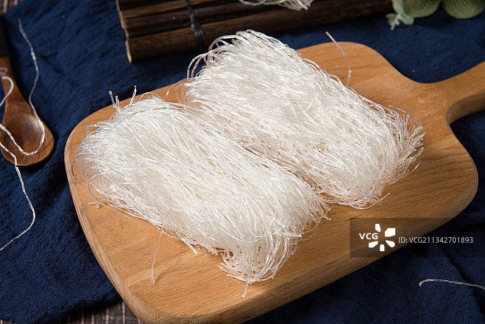

羊肉泡馍的历史可以追溯到西周时期，最初是宫廷御膳中的“羊羹”，用于祭祀和宫廷宴会。
到了隋唐时期，羊肉羹逐渐演变为现在的羊肉泡馍形式，成为民间广受欢迎的美食。
相传，北宋开国皇帝赵匡胤未得志时，曾在长安流浪，因一碗羊肉汤泡馍解了燃眉之急，后来登基后特命人寻找并赏赐了那家店铺，使羊肉泡馍名声大噪。
羊肉泡馍不仅是陕西地区的传统美食，更是一种文化的传承。
它反映了陕西人民的饮食习惯和生活智慧，体现了热情好客的传统。
在寒冷的冬季，羊肉泡馍以其温补的特性成为人们抵御严寒的首选，同时也象征着团圆和幸福。
羊肉：选用羊腿肉或羊脊肉，肉质鲜嫩且富有弹性。
羊骨：用于熬汤，增加汤汁的浓郁度。
馍：特制的饦饦馍，由九份死面与一份发面混合烙制而成。
调料：葱段、姜片、料酒、花椒、八角、桂皮、香叶、草果、白芷、砂仁、小茴香、盐、胡椒粉。
配菜：香菜、青蒜、粉丝、木耳。


羊肉炖煮：
将羊肉和羊骨洗净，浸泡2小时去除血水。
放入锅中加水煮沸，撇去浮沫后捞出洗净。
重新加水，放入羊骨和香料包，大火煮沸后转小火炖煮2-3小时，直至汤色浓白、羊肉酥烂。
馍的制作：
面粉加入酵母和温水，揉成面团，醒发30分钟后分成小剂子，擀成圆饼。
在平底锅中烙至两面微黄，取出晾凉后掰成小块。
泡馍：
将掰好的馍块放入碗中，加入炖好的羊肉汤、羊肉片、葱花、香菜、蒜苗等，煮沸后即可食用
选材：羊肉需选用带肥油的羊腿肉或羊肩肉，这样炖出的汤更鲜美。
炖煮：炖羊肉时需小火慢炖，确保肉质酥烂，汤汁浓郁。
馍的掰法：馍块大小适中，便于吸收汤汁。
火候控制：烙馍时火候要适中，避免烙焦。
调味：根据个人口味，可在食用时添加蒜泥、辣椒油等调味品。